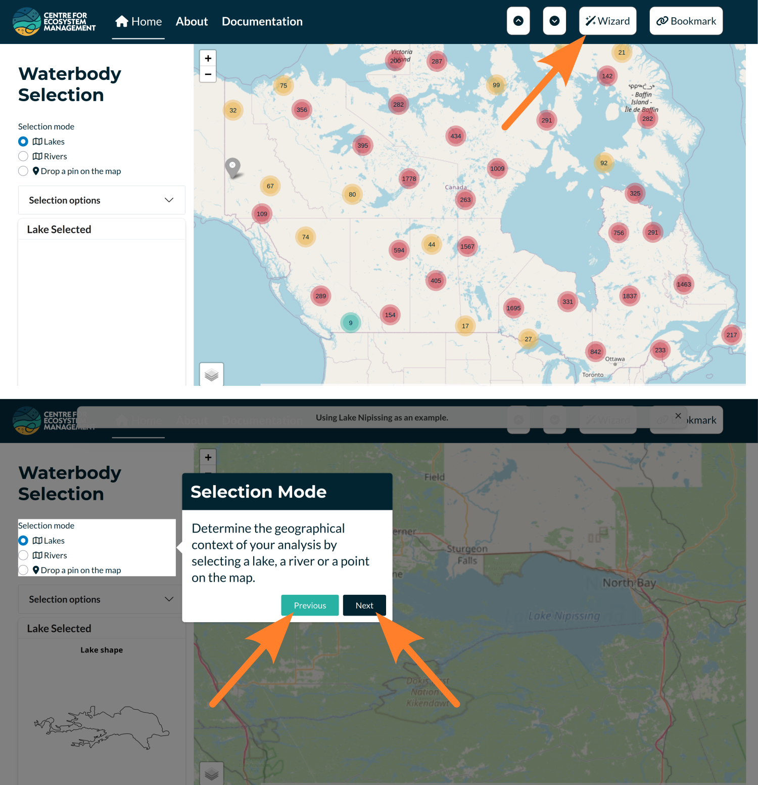
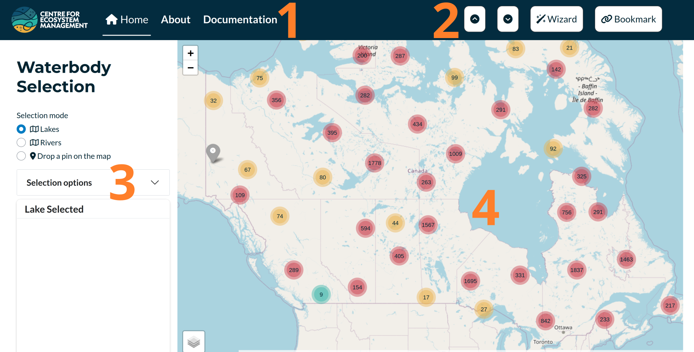
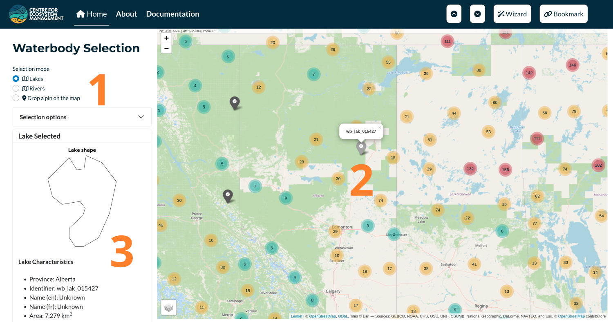
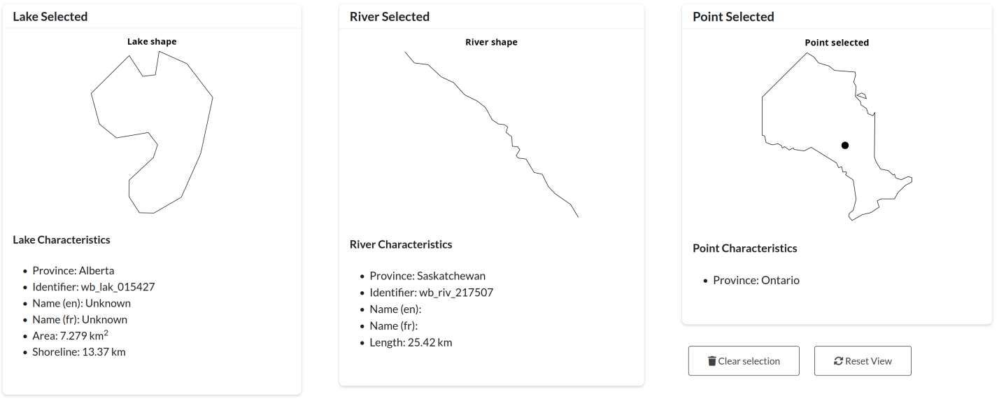
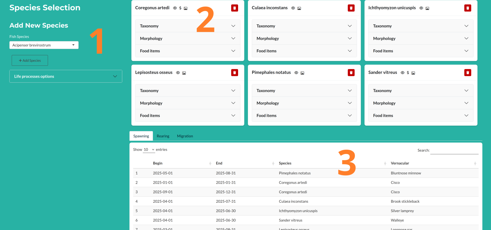
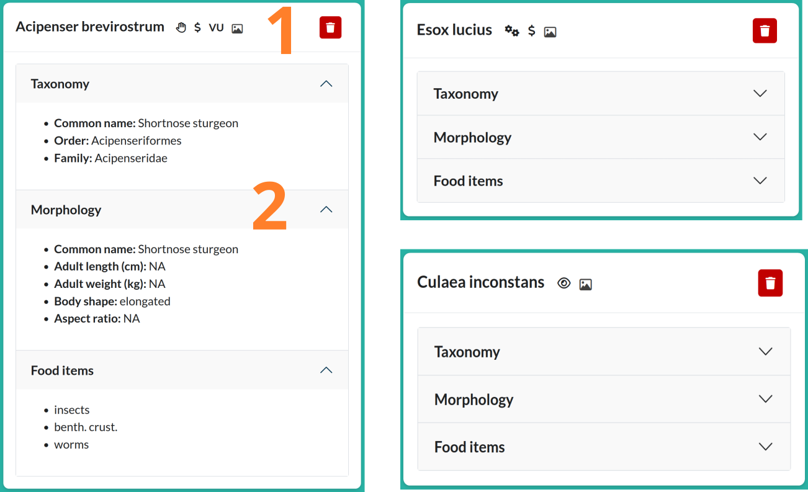
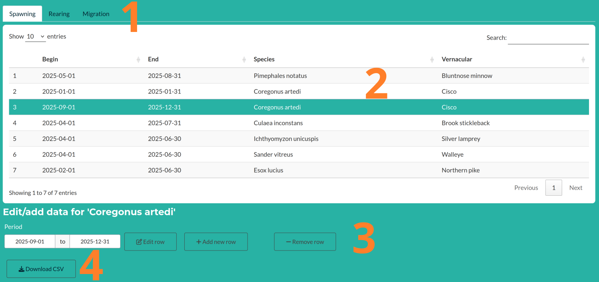
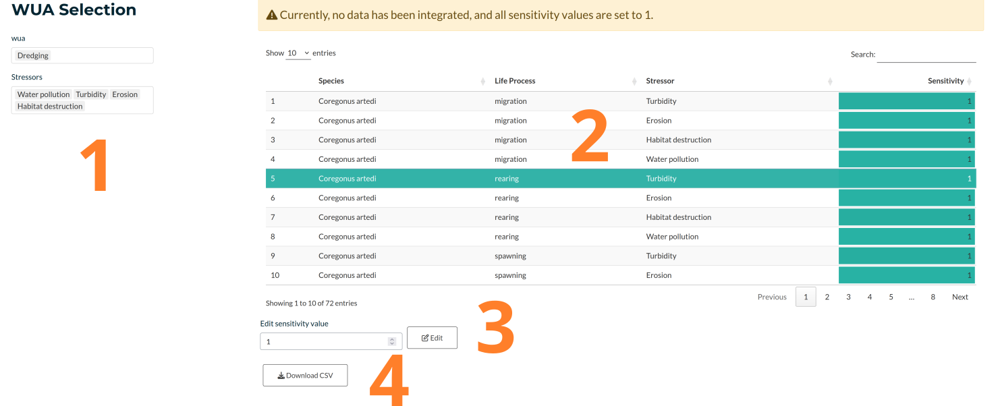

3 User Manual
3.1 tl;dr: the wizard
If consulting the manual feels cumbersome, you may use the ‘Wizard’ button to initiate a guided tour of the app. The tour begins with the selection of a lake Nipissing and then leads you through the various sections of the application. Use the Previous and Next buttons (shown below) to navigate through the tour. To exit the tour at any time, press the Esc key.

3.2 Starting with the application
When you start the application, a disclaimer will appear. After reading it, check the “OK” box to proceed to the main page of the app. The interface will look similar to the figure below.
The application is designed for use on computers with relatively large screens. It has not been optimized for smaller devices or media.
The main page of the application is divided into four interactive sections, each corresponding to a step in the workflow. At startup, only the first section is visible. The remaining three sections will become available after selecting a waterbody.
When the application starts, the page you see includes four key components of the interface.
Navigation Bar
The sticky navigation bar contains three links:- Home: Directs to the main page, which includes the core application.
- About: Provides information about the project.
- Documentation: Contains both the database documentation and this user manual.
- Home: Directs to the main page, which includes the core application.
Top-Right Buttons
Located at the top-right of the navigation bar:- Scroll-to-top and scroll-to-bottom buttons for quick navigation.
- A button to launch the setup wizard (as described in the previous section).
- A Bookmark button (rightmost), which allows users to save the current state of the app. This feature is especially useful for developers when reporting or debugging issues.
- Scroll-to-top and scroll-to-bottom buttons for quick navigation.
Left Panel
Each of the four sections of the application includes a left panel with input options for selection and computation. In the first section, this panel also includes a preview of the selected waterbody’s shape.Right Panel
The right panel displays the main outputs and allows users to refine their selections based on the displayed results.

3.3 Waterbody selection
The first section allows the user to define the context in which the impact of a timing window is being investigated. It includes three main components:
Selection Users can choose from three selection types — Lakes, Rivers, or Drop a Pin on the Map. Once a type is selected, the map on the right will update accordingly and become interactive.
Map The map is used to locate a specific lake or river, or to manually place a point that defines the study context. This selection also determines the province, which is used to pre-fill the status quo field in the final section.
Output A visual representation of the selected waterbody (or province, in the case of a dropped point) appears on the left, along with several key characteristics (see Figure ‘Examples of Waterbody Selection Types’).

This first section serves as the entry point to the Timing Windows Calculator. It allows users to select lakes or rivers for which fish species have been recorded; these species will be loaded in the next section.
Note that the “Selection Options” accordion can be used to limit the number of species pre-filled in the next step. This is especially useful for lakes where a large number of species have been documented.
Light gray markers represent waterbodies where fish species have been observed, while dark gray markers indicate waterbodies with no direct species observations. For these, species are inferred based on presence within the surrounding watershed. If a point is used, species will be manually added (see next section).
Finally, at the bottom left of the section, there are two buttons:
* “Clear Selection”: Removes the current selection.
* “Reset View”: Resets the map view to display all of Canada.

3.4 Species selection
The second section is used to build a list of species of interest for computing timing window scores. After selecting a waterbody, an initial list of species is proposed. The interface then allows users to tailor the list of species and specify which life processes to consider.
Left Panel
On the left, a species can be selected from a dropdown menu and added to the list by clicking the “Add Species” button. The life processes to consider can be specified using the “Life Process Options” accordion.Species Cards
The selected species are displayed as a list of cards. Each card contains basic information about the species (see Figure XX). A trash icon in the top-right corner of each card allows users to remove that species from the list.Life Processes Table
This table shows the date ranges for each life process being considered. Entries are drawn from the literature. If no data are available for a given species and process, a default row is added with the full-year range (January 1 to December 31). The table is editable (see Figure XX).

Here’s a cleaned-up and more readable version of your paragraph with correct grammar, consistent formatting, and improved flow:
For each species selected, a card is generated using information drawn from online databases—primarily FishBase and the Ontario Freshwater Fishes Life History Database.
Each card includes two elements:
Card Header
The header displays the Latin name of the species, followed by up to four icons and a trash icon on the right to remove the species from the list.The four context icons are as follows:
- Selection Source:
- 🖐️ A hand icon if the species was manually selected.
- 👁️ An eye icon if the species was observed.
- ⚙️ A gear icon if the species was not observed directly but is known to occur within the watershed.
- 🖐️ A hand icon if the species was manually selected.
- Commercial Status:
- 💲 A dollar icon is shown if the species is considered commercial.
- 💲 A dollar icon is shown if the species is considered commercial.
- Conservation Status:
- Displays codes like VU (vulnerable) or EN (endangered), if applicable.
- Displays codes like VU (vulnerable) or EN (endangered), if applicable.
- Image Availability:
- 📷 An icon appears if a species image is available—clicking it opens the image.
- Selection Source:
Card Body
The body of the card contains an accordion with three sections:- Taxonomy: Basic taxonomic information.
- Morphology: Key morphological traits.
- Food Items: Dietary information based on observed feeding behavior.
- Taxonomy: Basic taxonomic information.
Let me know if you’d like to show icon tooltips or provide examples in a figure! 
The bottom part of this section allows users to select and edit life process date ranges. To do so, follow these steps:
- Select the tab corresponding to the life process you want to edit.
- Click on the row you wish to modify.
- Edit or remove the life process dates as needed.
- Optionally, you can download the table as a CSV file.

3.5 WUA selection
The WUA (Works Undertaking and Activities) selection includes the following components:
WUA and Stressor Selection
Users select one or more Water Use Activities (WUAs), each associated with one or more stressors. These stressors are linked to species sensitivity and are used in the timing windows scoring process.WUA Table
This editable table links life processes and stressors, and functions similarly to the life process table. Users can adjust the stressor values for each life process–stressor combination (3). The table can also be downloaded as a CSV file (4).
Currently, we have not identified many quantitative values for species sensitivity to specific stressors. As a result, all sensitivity values are initially set to 1 by default. However, the table is fully functional and can be used to manually adjust and weight the contribution of each stressor to the final timing window scores.
